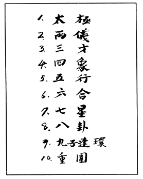
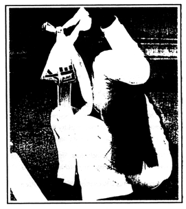

|  |  |
|
[From Dictee, p.154-155] |
--Theresa Hak Kyung Cha, Dictee, p.37 |
Theresa Hak Kyung Cha read about Cha in "Alerts " go to this issue's table of contents


 DISEUSE
DISEUSE


She mimicks the speaking. That might resemble speech. (Anything at all.) Bared noise, groan, bits torn from words. Since she hesitates to measure the accuracy, she resorts to mimicking gestures with the mouth. The entire lower lip would lift upwards then sink back to its original place. She would then gather both lips and protrude them in a pout taking in the breath that might utter some thing. (One thing. Just one.) But the breath falls away. With a slight tilting of her head backwards, she would gather the strength in her shoulders and remain in this position.
It murmurs inside. It murmurs. Inside is the pain of speech the pain to say. Larger still. Greater than is the pain not to say. To not say. Says nothing against the pain to speak. It festers inside. The wound, liquid, dust. Must break. Must void.
From the back of her neck she releases her shoulders free. She swallows once more. (Once more. One more time would do.) In preparation. It augments. To such a pitch. Endless drone, refueling itself. Autonomous. Self-generating. Swallows with last efforts last wills against the pain that wishes it to speak.
She allows others. In place of her. Admits others to make full. Make swarm. All barren cavities to make swollen. The others each occupying her. Tumorous layers, expel all excesses until in all cavities she is flesh.
She allows herself caught in their threading, anonymously in their thick motion in the weight of their utterance. When the amplification stops there might be an echo. She might make the attempt then. The echo part. At the pause. When the pause has already soon begun and has rested there still. She waits inside the pause. Inside her. Now. This very moment. Now. She takes rapidly the air, in gulps, in preparation for the distances to come. The pause ends. The voice wraps another layer. Thicker now even. From the waiting. The wait from pain to say. To not to. Say.
She would take on their punctuation. She waits to service this. Theirs. Punctuation. She would become, herself, demarcations. Absorb it. Spill it. Seize upon the punctuation. Last air. Give her. Her. The relay. Voice. Assign. Hand it. Deliver it. Deliver.
She relays the others. Recitation. Evocation. Offering. Provocation. The begging. Before her. Before them.
Now the weight begins from the uppermost back of her head, pressing downward. It stretches evenly, the entire skull expanding tightly all sides toward the front of her head. She gasps from its pressure, its contracting motion.
Inside her voids. It does not contain further. Rising from the empty below, pebble lumps of gas. Moisture. Begin to flood her. Dissolving her. Slow, slowed to deliberation. Slow and thick.
The above traces from her head moving downward closing her eyes, in the same motion, slower parting her mouth open together with her jaw and throat which the above falls falling just to the end not stopping there but turning her inside out in the same motion, shifting complete the whole weight to elevate upward.
Begins imperceptibly, near-perceptible. (Just once. Just one time and it will take.) She takes. She takes the pause. Slowly. From the thick. The thickness. From weighted motion upwards. Slowed. To deliberation even when it passed upward through her mouth again. The delivery. She takes it. Slow. The invoking. All the time now. All the time there is. Always. And all times. The pause. Uttering. Hers now. Hers bare. The utter.

 --from
Dictee,
pp. 3-5
--from
Dictee,
pp. 3-5

J'écoutais les cygnes.
Les cygnes dans la pluie. J'éoutais.
J'ai entendu des paroles vrai
ou pas vrai
impossible à dire.
Là. Des années après
Impossible de distinguer la Pluie.
Cygnes. Paroles souvenus. Déjà dit.
Vient de dire. Va dire.
Souvenu mal entendu.
Pas certain.
La Pluie fait rêver de sons.
Des Pauses. Exhalation.
Des affirmations toutes les affirmations.
Peu à peu
Impossible de distinguer les paroles
Exhalées. Affirmées en exhalation
exclamées en inhalation
Ne plus distinguer la pluie des rêves
ou des souffles
La langue dedans. La bouche dedans
la gorge dedans
le poumon l'organe seul
Tout ensemble un. Une.
Là. Plus tard, peu certain, si c'était
la pluie, la parole, mémoire.
Mémoire d'un rêve.
Comment cela s'éteint. Comment l'etéindre.
Alors que cela
s'éteint.
Mordre la langue.
Avaler profondément. Plus profondément.
Avaler. Plus encore
Jusqu'à ce qu'il n'y aurait plus. D'organe.
Plus d'organe.
Cris.
I heard the swans
in the rain I heard
I listened to the spoken true
or not true
not possible to say.
There. Years after
no more possible to distinguish the rain.
No more. Which was heard.
Swans. Speech. Memory. Already said.
Will just say. Having just said.
Remembered not quite heard. Not certain.
Heard, not at all.
Rain dreamed from sounds
The pauses. Exhalation.
Affirmations. All the affirmations.
Little by little
Not possible to distinguish the speech
Exhaled. Affirmed in exhalation.
Exclaimed in inhalation
or from breaths.
Tongue inside the mouth inside
the throat inside
the lung organ alone. The only organ.
All assembled as one. Just one.
memory.
Re membered from dream.
How it diminishes itself. How to Dim
inish itself. As
it dims.
To bite the tongue.
Swallow. Deep. Deeper.
Swallow. Again even more.
Just until there would be no more of organ.
Organ no more.
Cries.
---from
Dictee,
pp. 66-69

Columns. White. Stone. Abrasive and worn.
Whiteness of the screen. Takes her backwards.
Drawn to the white, then the black. The shadows moving across the whiteness, dark shapes and dark light.
Extreme Close Up shot of her face. Medium Long shot of two out of the five white columns from the street. She enters from the left side, and camera begins to pan on movement as she enters between the two columns, the camera stop at the door and she enters. Medium Close Up shot of her left side as she purchases the ticket her full figure from head to foot. Camera holds for a tenth of a second. The camera is now behind her, she is at the end of the queue. Long shot. Cut to Medium Close Up shot of her from the back. She turns her head sharply to her left. cut. The clock in Extreme Close Up. Same shot of her head turning back. She leaves the camera, other faces enter, of the others in line, and camera is stationary for a brief tenth of a second. Close Up shot of her feet from the back on the three steps leading into the theatre, camera following her from the back. She stops. Her left foot lifts back half a step then resumes. Camera is stationary, tilts upward and remains stationary. Pans to the right, while zooming out, the entire theatre in view. The theatre is empty, she is turning right into the aisle and moving forward. She selects a row near the front, fourth seat from the left and sits. Medium Close Up, directly from behind her head. She turns her head to the left, on her profile. Camera pans left, and remains still at the profile of another woman seated. Camera pans back to the right, she turns her head to the front. The screen fades to white.
--from Dictee, p.69